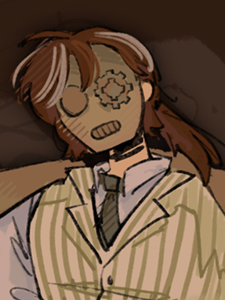

The Terrariums

he/him
| Name | Jimmy MacHalloran |
| Birthday | Sextilis 14, 2005 |
| Size | 5'5 |
| Breed | Chinese-Irish |
| Sex | Occasionally |
| Comes from | susnet |
Background: Firstborn child of a big tech heiress and popular architect. He has an adopted older sibling and a young niece who he coparents with his husband.


| Favorite activity: | Inventing a unique solution to common problems |
| Favorite food: | Buttered corn on the cob |
| Favorite drink: | Jasmine tea |
| Favorite toy: | Glass marbles |
| Personal item: | A cogwheel |
- He frequents the thrift store in his small town for antiques and scrap metal.
- It took a while for him to accept Mina as his daughter. Fry did not have such a difficult time.
- Jimmy likes buttered and steamed corn on the cob best since it's easy to prepare and inspect.
Distinct markings: A large burn scar across his left eye and a missing left foot. His hands are dappled with hypopigmented spots. There are four more spots of hypopigmentation on his scalp, leaving streaks of gray hair.
Personality: Jimmy prefers to keep to himself and only speak to Fry, Mina, and Mars.
Fashion sense: Steampunk - He wears a dirty brass mask to cover up the giant burn on his face. His prosthetic leg is made of wood and leather.
Other notes: Jimmy is a good father. He's just not a happy one.
z